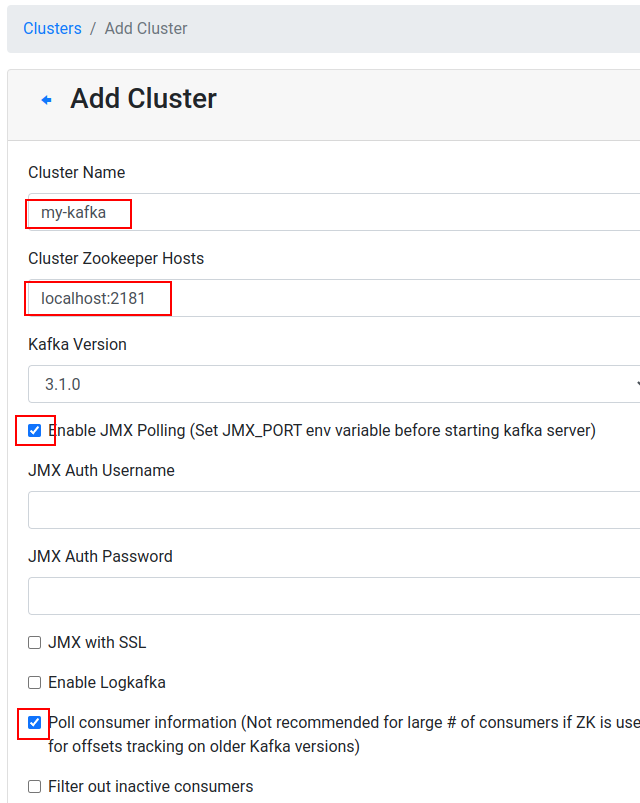
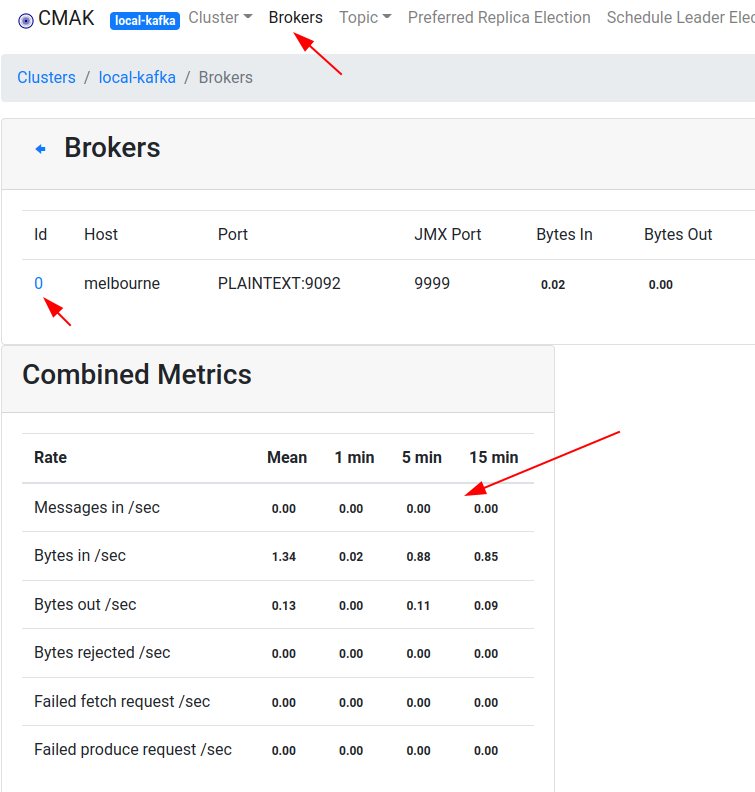

Install and run Kafka
None
10 mins
# be sure to be in home directory
$ cd
$ wget https://elephantscale-public.s3.amazonaws.com/downloads/kafka_2.11-2.1.0.tgz
$ tar xvf kafka_2.11-2.1.0.tgz
$ mv kafka_2.11-2.1.0 kafka
## older version
# $ tar xvf ~/files/kafka_2.11-1.1.1.tgz
# $ mv kafka_2.11-1.1.1 kafkaEnable deleting the topics
Start Kafka
We are setting the optional JMX port so we can get metrics easily.
Try JPS command to see if Kafka is running
$ jpsOutput may look like this. We have Zookeeper and Kafka running
4737 QuorumPeerMain
5361 Kafka
5075 main
5092 main
5418 JpsWe are using the excellent Kafka Manager UI (by Yahoo). We have already packaged the application that is ready to use.
$ cd ~/apps/kafka-manager
$ nohup bin/kafka-manager &
$ cdGo to url : http://your_IP:9000 in your browser.
You may see a UI like this.
Access the ‘local’ cluster already defined. If one is not defined, you can define one as follows.

Explore the UI

Inspect ZK config
Go to ZK web dashboard (http://ip_address:8081) and refresh.

$ ~/zookeeper/bin/zkCli.sh -server localhost:2181
> ls /
> ls /brokers
> ls /brokers/ids
> ls /brokers/ids/0